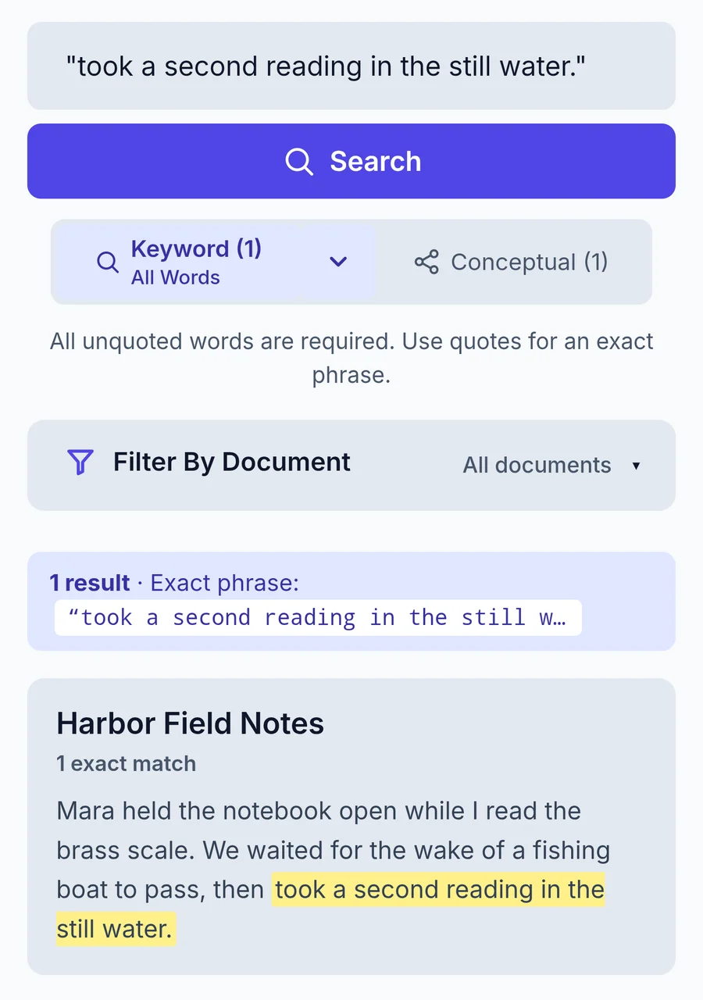
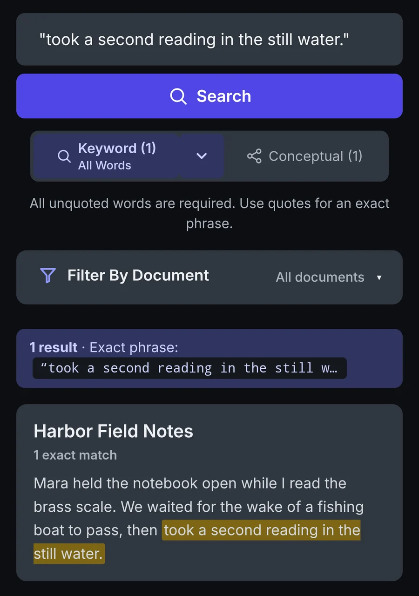
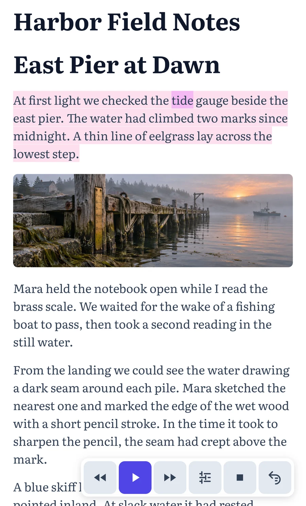
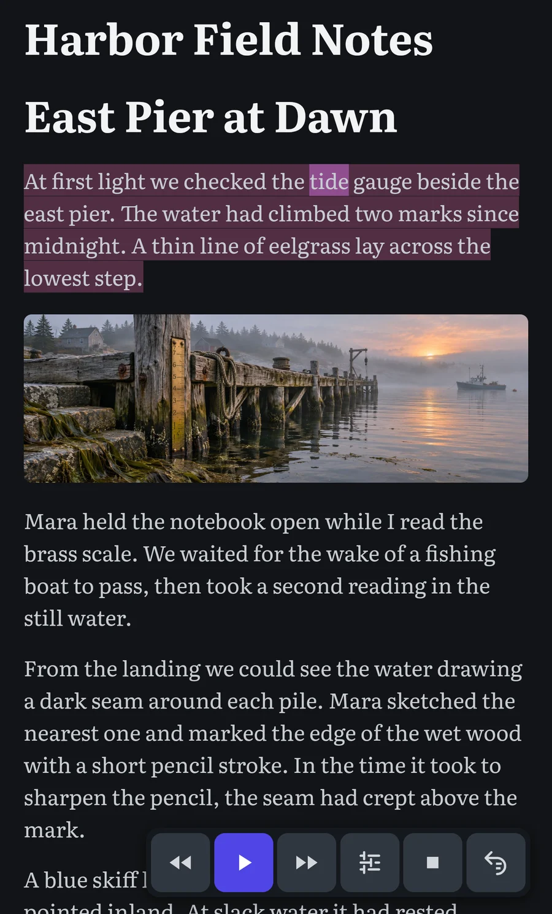
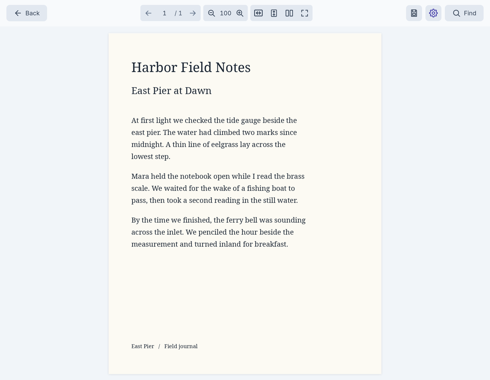
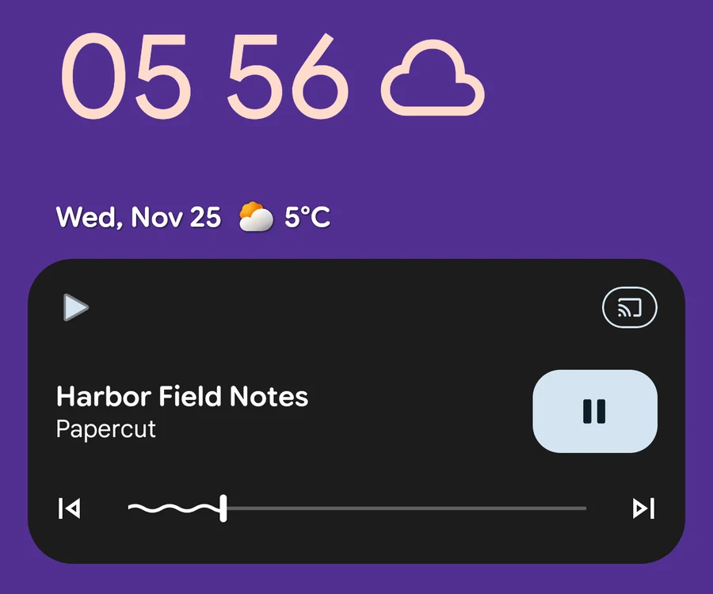

Buscar
Busca una palabra o una frase exacta en el texto completo.
Si recuerdas la idea, prueba la búsqueda semántica basada en embeddings para encontrar pasajes con un significado similar.





Busca un pasaje en tus libros, artículos y notas. Léelo en contexto o escúchalo en tu dispositivo.




Busca una palabra o una frase exacta en el texto completo.
Si recuerdas la idea, prueba la búsqueda semántica basada en embeddings para encontrar pasajes con un significado similar.


Abre el resultado en el pasaje y sigue leyendo.
Guarda el pasaje con un marcador para volver a él la próxima vez que abras el documento.


Reproduce tu audiolibro guardado desde este pasaje.
Sigue el texto resaltado mientras escuchas o adelántate en la lectura mientras continúa la narración.
Importa tus documentos en lectores locales de HTML, EPUB, PDF, TXT y Markdown. Los PDF conservan sus páginas originales, mientras el OCR sin conexión puede hacer que las páginas escaneadas en inglés o árabe se puedan buscar y escuchar.
Importa muchos archivos a la vez, explora portadas o listas, organiza carpetas, edita títulos, guarda audio generado y mueve documentos y audiolibros seleccionados entre dispositivos con Papercut.


Descarga una voz una vez y genera y reproduce audiolibros en tu dispositivo sin suscripción ni cargos por uso.
Guarda paquetes de audiolibros para compartirlos, transferirlos o importarlos de nuevo en Papercut desde otro dispositivo.
Voces e idiomas
La importación, la búsqueda, la lectura y la generación de audiolibros se realizan en tu dispositivo. El reconocimiento de texto en inglés y árabe para PDF viene incluido y funciona sin conexión.
Las descargas y los enlaces externos usan internet. Si eliges enviar libros o audio a otro dispositivo, la transferencia directa usa la red local.
Empieza con un instalador recomendado o abre el grupo de una plataforma para ver todos sus paquetes. Preguntas frecuentes
Papercut_v1.10.2_android-arm64-v8a.apk
Activa Instalar aplicaciones desconocidas en los ajustes de tu navegador o gestor de archivos y, después, abre el APK.
Próximamente en App Store
Papercut_1.10.2_amd64.AppImage
Papercut_1.10.2_amd64.deb
Papercut-1.10.2-1.x86_64.rpm
Requiere Linux amd64 con WebKitGTK y GStreamer disponibles. Los artefactos de la versión se compilan en Ubuntu 24.04.
Basado en Debian (Ubuntu, Mint): sudo apt install ./Papercut_*.deb
Basado en RPM (Fedora, openSUSE): sudo rpm -i Papercut-*.rpm
AppImage: hazlo ejecutable (chmod +x) y ejecútalo directamente. En sistemas basados en Arch, AppImage puede necesitar WEBKIT_DISABLE_COMPOSITING_MODE=1; consulta el README para obtener más información.
Papercut_1.10.2_aarch64.dmg
Papercut_1.10.2_x64.dmg
Requiere macOS 10.13 o posterior en equipos Mac con Apple Silicon o Intel. Abre el archivo .dmg y arrastra Papercut a la carpeta Aplicaciones. Las versiones oficiales están firmadas con Developer ID y notarizadas. Si pruebas un artefacto de CI o desarrollo local sin firmar, haz clic derecho (o Control-clic) en el icono de la aplicación y elige Abrir la primera vez que la abras.
Elige la versión que corresponda a tu Mac: Apple Silicon (_aarch64.dmg) para procesadores de la serie M, o Intel (_x64.dmg) para equipos Mac con Intel.
Papercut_1.10.2_x64_en-US.msi
Papercut_1.10.2_x64-setup.exe
Requiere Windows 10 o posterior de 64 bits y Microsoft Edge WebView2. Ejecuta el instalador MSI o EXE y sigue las instrucciones.
SHA256SUMS.txt
v1.10.2.zip
v1.10.2.tar.gz
Detalles prácticos sobre el audio sin conexión, la privacidad, los archivos compatibles y la instalación de Papercut en cada plataforma.
Papercut importa archivos HTML, EPUB, PDF, TXT y Markdown. Los PDF con texto incrustado se pueden buscar de inmediato; las páginas de solo imagen e híbridas se pueden reconocer bajo demanda en inglés o árabe con OCR sin conexión. Los dispositivos Android compatibles también pueden escanear páginas o importar fotos a un PDF.
Sí. Papercut también utiliza OCR integrado en el dispositivo para reconocer texto en inglés o árabe en páginas PDF de solo imagen o híbridas. El OCR y la generación de audiolibros no suben tus documentos a un servicio en la nube.
Para buscar por significado, descarga el modelo opcional, activa la búsqueda semántica experimental y crea el índice en tu dispositivo. Después podrás buscar sin conexión.
Las descargas y los enlaces externos usan internet. Si eliges enviar libros o audio a otro dispositivo, la transferencia directa usa la red local.
Papercut está disponible en inglés, árabe, chino simplificado, español, francés, hindi, italiano y portugués de Brasil.
Kokoro admite inglés y ofrece voces experimentales en chino mandarín, español, francés, hindi, italiano y portugués de Brasil. Supertonic ofrece voces experimentales en inglés y árabe.
Kokoro es el modelo predeterminado para inglés. Una vez descargado, genera voz en el dispositivo sin clave de API ni tarifas por carácter.
Piper Kareem admite árabe. Supertonic es una alternativa experimental. SILMA requiere un entorno de ejecución opcional en Linux x64.
Papercut no reclama la propiedad del audio generado. Eres responsable de los derechos del texto de origen, de cualquier voz de referencia o grabación utilizada y de cómo se comparte el audio exportado. Papercut guarda el audiolibro localmente y no lo carga en ningún servicio.
Sí. Los audiolibros guardados se pueden exportar como paquetes de Papercut para compartirlos, transferirlos a otro dispositivo, crear copias de seguridad o volver a importarlos más tarde. Si compartes, publicas, vendes o emites audio generado, indícalo como generado por IA y no lo uses para suplantar ni engañar.
No. Las funciones de voz de referencia solo deben utilizarse con voces y grabaciones para las que tengas derechos o permiso.
Android: Android 8.0 / API 26 o posterior en dispositivos arm64-v8a.
iOS: previsto; el lanzamiento en App Store llegará próximamente.
macOS: macOS 10.13 o posterior en equipos Mac con Apple Silicon o Intel.
Linux: Linux amd64 con WebKitGTK y GStreamer disponibles; los artefactos de la versión se compilan en Ubuntu 24.04.
Windows: Windows 10 o posterior en hardware x64 con el entorno Microsoft Edge WebView2.
Empieza por el README para obtener ayuda de configuración y detalles de cada plataforma. Consulta las novedades en las notas de la versión, explora todas las versiones, o colabora en GitHub.
Contacto
Informa de errores, pide ayuda, solicita un idioma o modelo de voz, o cuéntanos qué mejoraría Papercut para tu biblioteca.
Los formularios se procesan mediante Netlify Forms. No incluyas documentos privados, secretos ni contenido sensible de tu biblioteca.